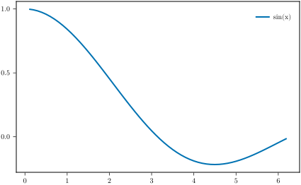
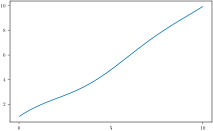

Documenter Integration
MakieMaestro.jl includes a plugin for Documenter.jl that allows you to embed Makie figures directly into your documentation using code blocks.
Setup
To use the MakieMaestro Documenter plugin in your documentation, add the following to your docs/make.jl file:
using Documenter, MakieMaestro
using YourPackage
MakieMaestro.Themes.width!(15u"cm") # Make sure to set a default width or use the `width` option in the `@makie` block
# Create the MakiePlugin with optional customization
makie_blocks = MakieDocBlocks(
figure_dir = "assets/my_figure_dir", # default is "assets/figs",
# Optional: specify the export formats (default: [:svg, :pdf])
export_format = [:svg, :png, :pdf, :eps],
)
makedocs(
# ... your existing options ...
plugins = [makie_blocks],
)It is not necessary to create the plugin with MakieDocBlocks. As long as you do not want to change the default settings of the plugin. You only need to load MakieMaestro to use the Documenter plugin. However, consider defining the plugin if you are developing a package with other contributors as it is more explicit and will make it easier for them to understand the documentation generation process.
The target figure directory should not be preceded by a slash.
# MakieDocBlocks(figure_dir = "/assets/my_figure_dir") # ⚠️ DOESN'T WORK!!!
MakieDocBlocks(figure_dir = "assets/my_figure_dir") # ⬅️ USE THISFor more details about this issue, see the functioning of joinpath
For the CI to be able to build figures using GLMakie you need to set up a screen in the CI environment. You can do this by prepending the command with DISPLAY=:0 xvfb-run -s '-screen 0 1024x768x24' --. For example for building the documentation, you will run the command
DISPLAY=:0 xvfb-run -s '-screen 0 1024x768x24' -- julia --project --color=yes make.jlLook at the workflows in this repository for a working example.
Basic Usage
Once the plugin is set up, you can include Makie figures in your documentation using code blocks with the @makie language tag:
```@makie
# Your code for generating the figure
fig # Return the figure at the end of the block
```The code will be executed during the documentation build, and the resulting figure will be saved and inserted into your documentation as an image (specifically the Documenter LocalImage).
The code in the block must return a Figure in order to work.
You can also use named blocks with the same format as for the documenter @example block. The code will be evaluated in the same module as the @example blocks with this name, so it will have the global variables at its disposal.
For example this is possible to
```@example sine
x = 0.01:0.01:10
y = sin.(x) ./ x .+ x
```
```@makie sine
lines(x,y)
```Example
Here's an example of using the @makie code block in documentation:
This code block
```@makie
x = 0:0.1:2π
fig,ax,_ = lines(x, sin.(x) ./ x, linewidth = 2, label = "sin(x)")
axislegend(ax)
fig
```generates the following figure

This @example and @makie blocks are evaluated in the same module
```@example A
x = 0.01:0.01:10
y = sin.(x) ./ x .+ x
```
```@makie A
lines(x,y)
```and produce
x = 0.01:0.01:10
y = sin.(x) ./ x .+ x1000-element Vector{Float64}:
1.0099833334166664
1.019933334666654
1.0298500067498553
1.039733354665854
1.0495833854135665
1.0594001079907434
1.0691835333933253
1.0789336746146587
1.088650546644567
1.0983341664682815
⋮
9.872094049683994
9.881258635300792
9.890429771024179
9.89960752480611
9.90879196383095
9.917983154510601
9.927181162479751
9.936386052591162
9.945597888911063